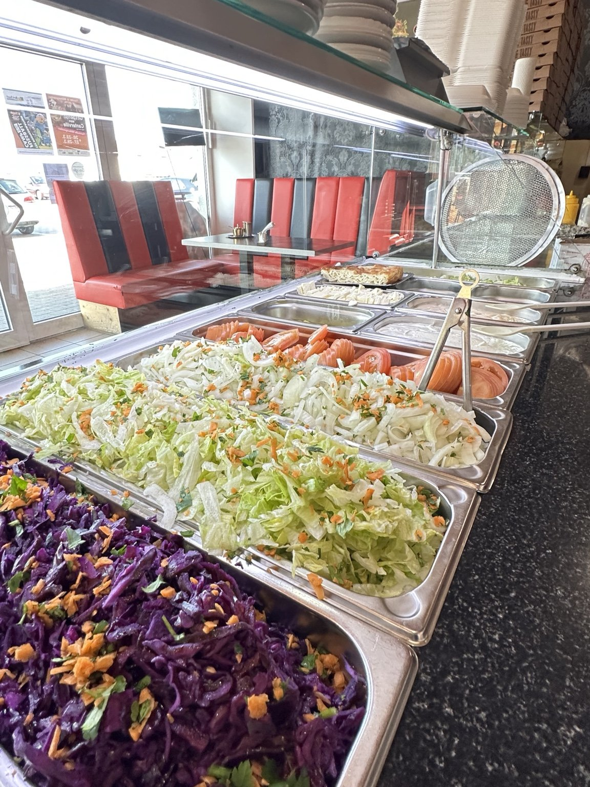
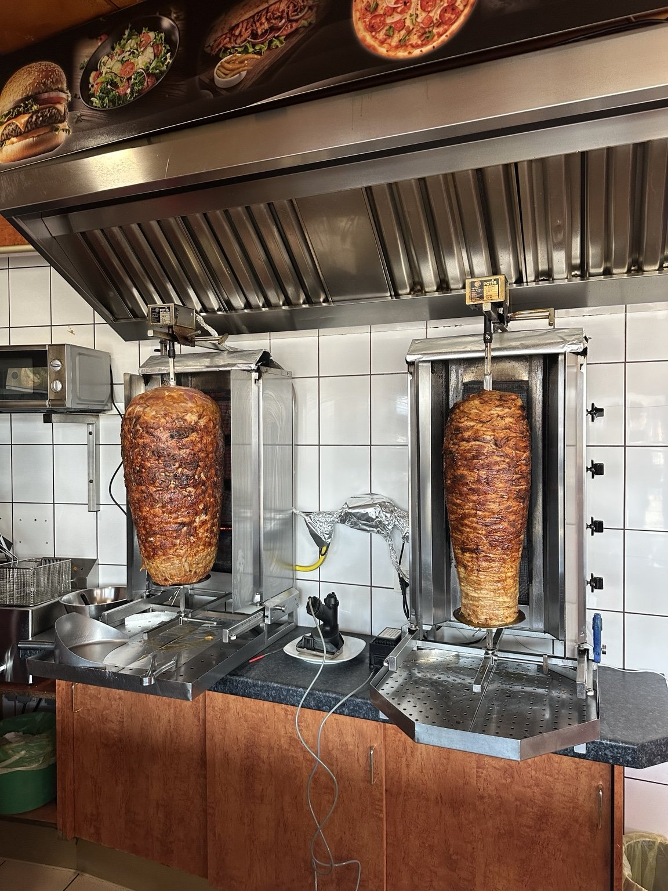
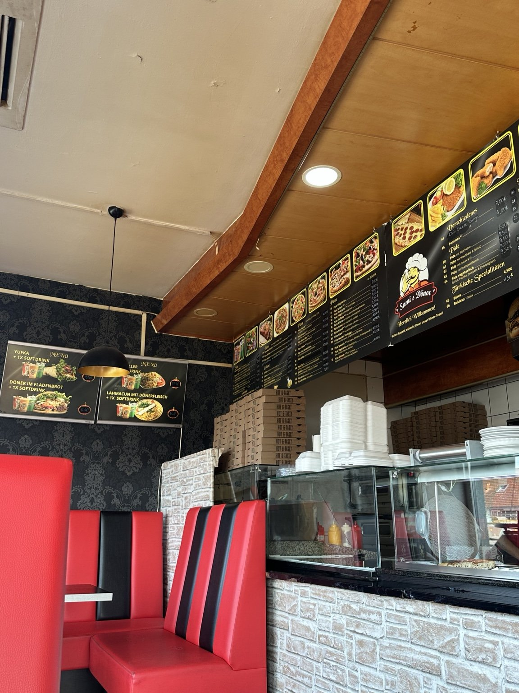
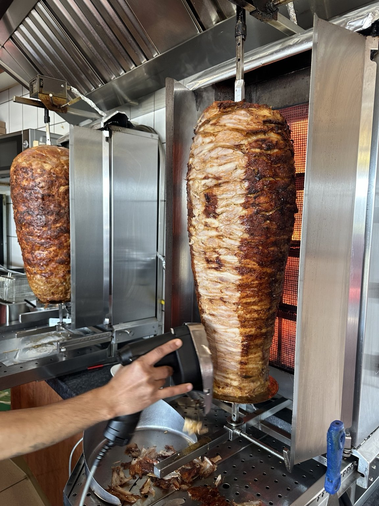

Qualität
Frische Zutaten
Salate knackig, Saucen ausgewogen, Fleisch/Falafel heiß — so muss das.
Döner & Pizza wie’s sein soll saftig, knusprig, würzig — und immer mit Fokus auf Qualität. Bestell easy per Telefon oder WhatsApp.




Weil guter Geschmack bleibt hängen. Frische Zutaten, ehrliche Portionen und ein Team, das dich wie einen Stammgast behandelt.
Salate knackig, Saucen ausgewogen, Fleisch/Falafel heiß — so muss das.
Ein Klick auf Anruf oder WhatsApp — fertig. Perfekt für Mittagspause & Feierabend.
Klassiker, Specials, Beilagen. Alles klar gelistet: von Drehspieß bis Pizza – damit du schneller findest, was du willst.
Kurz anrufen oder per WhatsApp schreiben – wir machen’s fix fertig ✨ Abholen ist easy
Sami’s Döner gibt’s in Wassertrüdingen seit vielen Jahren – und seit 5 Jahren wird der Laden von einem jungen, dynamischen Team geführt. Was uns wichtig ist, ehrliches Essen, frische Zutaten und ein Geschmack, der jedes Mal gleich gut ist. Ob Döner, Pizza oder Lahmacun – bei uns geht’s schnell, unkompliziert und vor allem lecker.
Am Krautgarten 1a · 91717 Wassertrüdingen